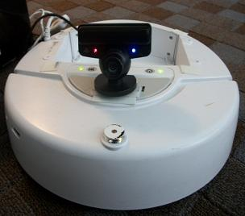

My doctoral research, under the advisement of Dr. Chris Parnin, explored improving the behavior of software engineers by introducing developer recommendation choice architectures, a framework for integrating concepts from nudge theory into the design of bots and automated recommendation systems. To evaluate this approach, I determined what makes an effective developer recommendation, analyzed existing systems, and developed a novel bot.
Dissertation Title: Digital Nudges for Encouraging Developer Behavior
DissertationNCSU Library Repository
Final Defense Slides
Thesis Statement:
By incorporating developer recommendation choice architectures into recommendations for software engineers, we can nudge developers to adopt behaviors useful for improving code quality and developer productivity.
Effective Developer Recommendations
Developer Recommendation Choice Architectures
- Sorry to Bother You Again: Developer Recommendation Choice Architectures for Designing Effective Bots [BotSE 2020]
Analyzing Existing Systems
 |
To evaluate the developer recommendation choice architectures framework, I first examined the GitHub suggested changes feature which incorporates all of the framework principles. This feature allows reviewers to make specific recommendations on lines of code to improve pull requests during reviews, and lets developers automatically apply, reject, or edit changes. To analyze suggested changes through the lens of my framework, I conducted studies comparing this feature to other systems of recommendation styles and empirically analyzing its impact on development practices on GitHub. |
- Understanding the Impact of GitHub Suggested Changes on Recommendations Between Developers [ESEC/FSE 2020]
- Source Code
Developing New Tools
 |
Finally, to further evaluate the framework and support the thesis statement I developed and evaluated a new tool called class-bot. This system incorporates developer recommendation choice architectures through using automated GitHub issues to encourage students to adopt better behaviors while working on coding projects by following the software engineering process (Requirements, Design, Implementation, Testing, and Deployment). The evaluation shows class-bot improved student productivity by increasing programming activity and preventing procrastination in addition to improving the code quality of submissions. |
Other Graduate Research
Technical Interviews
Regular Expression Bugs
API Specification
Program Navigation
Flower (pronounced flow-er) is an Eclipse plugin that leverages powerful program analysis techniques while maintaining a minimalistic interface to assist developers in effectively navigating program flow. Our tool enables developers to simultaneously navigate control flow and data flow within the Eclipse Integrated Development Environment (IDE). Some of the features include clicking on any variable or parameter to automatically invoke the tool and highlight everywhere the variable is used and displaying links in the code as well as boxes directly above and below the editor to method calls and declarations where the selected variable is modified or referenced. |
Automated Program Repair
Computer science education faces a unique problem where enrollment in introductory courses is drastically increasing while the field's retention rate is decreasing. Programming assignments and grades play a major role students losing interest in the major. This project studies using concepts from automated program repair to improve CS education by providing valuable feedback and automatically grading assignments for beginner programmers. The results suggest our patch grading algorithm is effective for improving grades on introductory coding assignments. |
Undergraduate Research
Computer Science Education
|
This project focused on using the Alice 3D block-based programming language to integrate computer programming concepts and computational thinking into K-12 education, specifically middle school math. For this work, we organized Adventures in Alice Workshops for K-12 teachers interested in incorporating computational thinking and programming concepts into their courses, hosted an Alice Activity Day for students, created and mapped tutorials to standards for middle school students, and presented this work at a variety of venues for students and research presentations. This research was completed for the Duke University Computer Science Undergraduate Research Fellowship (CSURF) program with Dr. Susan Rodger. |
- Weaving Computing into all Middle School Discipline [ITiCSE 2014]
- Integrating Computer Science Into Middle School Mathematics (Honor's Thesis)
- Integrating Computer Science Into Middle School Mathematics (Poster) [SIGCSE 2013]
- Tutorials
- Study Materials:
Robotics
|  | For this work, we examined ways to integrate robotics into society and improve the interaction between robots and humans. We explored using the Robot Operating System (ROS) to program iRobot Create robots and AR Drone Parrot Quadricpoters. Our final project consisted of designing and creating SwagBot, a delivery system to transport objects between users. This project was completed as part of the Computing Research Association Distributed Research Experience for Undergraduates (DREU) program Dr. Chad Jenkins and the Brown University Robotics group. |